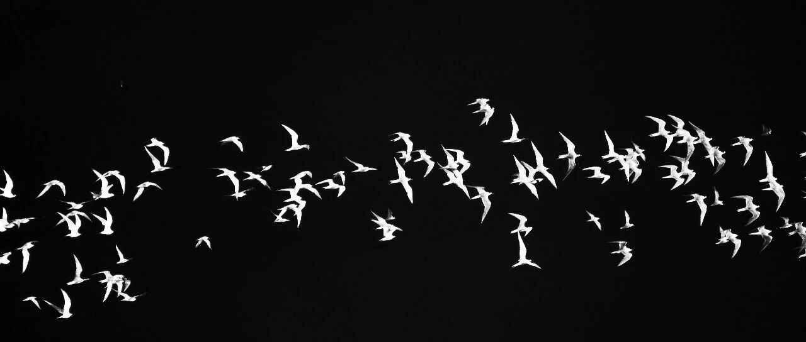

只不过从头再来~
标普500和纳指都是微涨。
持仓的个股大多微涨微跌状态。科技股中Meta涨了3.16%，收盘价687美元，离700和720各减仓5%的节点近了一步。
谷歌利空，但仍上涨1%，收盘价169.39美元。老美司法部仍然敦促法院对谷歌母公司Alphabet采取严厉措施，要求其剥离浏览器部门谷歌Chrome，并出售给其他公司。
目前市面上能接得动这盘的，没几个，总不能让微软来接吧，所以剥离、出售行为，需要漫长的拉锯时间。
台积电上涨2.42%，收盘价202.4美元，设置的205美元减仓5%的节点未被触发。台积电目前的持仓占比略高，这次减仓后，成本会降低到58美元左右，然后215再减仓一点，成本降到50美元以内。
特斯拉跌了3.55%，收盘价332美元。特斯拉太妖，不好把握，我会继续执行逢高减仓的计划，把它的仓位占比控制在1.5%左右。
美股这一轮已经接近修复高位，目前修复到嘴巴的位置左右了。
事后回头看，只能说既要耐心等待机会点出现，又要在机会到来时，克服恐惧勇敢地迅速出手。该耐心就耐心，该出手要迅速，好的交易送上门来，还耐心等，这就很对不起市场和机遇。
后续会不会再有震荡下跌，目前说不准，所以我的应对策略是逢高减仓，分批出，每次的比例控制在5-10%左右。
腾出来的仓位和资金，用于应对后续的变化，成本降低和手握现金，心态会稳很多，这是“用现金流滚出优质股权资产”的典型操作。
这一轮，在漫天的宏大叙事中（DeepSeek为代表的科技崛起、小红书对账为代表的“新时代水深火热”、C919〈核心发动机依赖进口〉国产为代表的“大国之光”等），我整体的决策和操作没有受到影响，操作比较满意。
如今回头看那段时间的群魔乱舞、众蠢横行，只能感叹:信息源太重要了。不被污染、扭曲、加工的信息，对投资有天大的助益。
没赶上的也没关系，投资这种事，机会点过了就重新耐心等待，等下一轮机会。
只要方向验证是正确的，一时掉队也没事，只不过从头再来，多点时间成本，没什么。
… …
昨天晚上在布置新家，三个娃选好房间后，开始布置自己的房间。
小儿子说，长大后要娶个媳妇，可以像我一样有人一起帮忙整理房间，速度会快很多。
我听了觉得很搞笑，他这一年多经常说长大后要娶个媳妇，很爱她；然后生几个小孩，也很爱小孩，会像我一样给他的孩子们做好引路人和榜样的作用。
找个垫子坐下，抱着这小家伙，老大老二也都在，索性跟他们讲一讲婚姻，希望他们从小就有这方面的意识，而不是被舆论引导，人云亦云。
婚姻，是找个人生搭档，共同去对抗来自周遭和未来的风险。所以，需要对方品行端正、为人靠谱，“娶妻娶贤不娶色”就是这个道理，嫁人也一样。
这就要求，对方本身不是风险，好吃懒做、好赌、贪得无厌这些，就是风险。
如果一个人，散发出一种孤家寡人的气场，身边无人能帮他守住本该有的权利、撑住他的家庭和退路，他就非常容易成为猎物。
特别是有钱人，如果没有能力保护好自己，就如“稚子怀金行于闹市”。
这就需要伴侣能帮他，辅助位你得担起来，他打猎，你得能帮他保住猎物；而不是看他遭遇困境了，趁机也捅上两下，卷着猎物跑路。
贤内助，“贤”和“助”是最重要的，内和外其实更多是分工。伴侣最好情绪稳定，夫妻双方都是撑起家的重要角色，缺一不可。
穷不玩高配，富不嫌原配，这个还是挺重要的。
尤其是富不嫌原配这点，玩得花的富人很多，但楼塌了以后，众多金丝雀飞奔四方，大多数情况下，只有原配能帮他守住家和子嗣。
常去加拿大和美国，久了也知道在温哥华这座城市，半山的别墅、市区的豪宅，里面有很多守候归人的故事。
这些归人，大多数是各不同行业的富豪、中高层“公仆”。可能在外玩得花，却有个后院永不塌，这是很难能可贵的。
但是，最好还是不要辜负伴侣，将心比心，换位思考。因为只有他/她最大概率会陪你到老，走完人生的路，孩子们长大后踏上自己的人生旅途，很难顾得上你。
我对娃们说:以后找对儿媳妇/女婿了，如果是自身过错对不起对方，哪怕我八十岁了，我都会拿着“听话神器”请你们好好吃一顿“笋干炒肉丝”。哈哈哈。
我们的教育，对于情爱太过吝啬，对于责任又过多描述，二者失去了平衡，一味强调付出和奉献。
就像幸福并不全源于物质，但物质往往是幸福不可或缺的一环，二者不可分割。
幸福不属于穷人，也不属于富人，而是属于那些容易满足的人。人们总是把幸福解读为有房、有车、有钱、有权；其实幸福应该是无忧、无虑、无病、无灾。
但是，后者往往又和前者有所关联，加上知足常乐的心态，就容易觉得幸福。幸福是一种感觉。
这或许是未来我需要在家庭教育中给孩子们补齐的。
就像财商教育一样，家长总是担心这方面的教育会把孩子变得唯利是图，过分看重金钱。
其实大可不必，从我自身的实践结果来看，过程中培养好同理心和责任感，让孩子充分意识到钱是一种媒介和工具，用得好也可以做很多事、帮到很多人，就行了。
“经济学是对人和社会商业活动的基本描述，每个人一辈子无论从事什么职业，都免不了要和商业、经济打交道，所以对商业的了解实际上是通识教育的一部分”。
这方面的教育在绝大部分国家里相对比较缺失，并不止我们国家。一部分原因可能是群体对经济学的认知不足，另一方面可能是顾虑孩子变得“唯利是图”。
对于这方面的知识了解越早越好，一个人有一些商业的知识，能知道经济运行的基本规律，无论将来从事什么活动，都会对他有所帮助。
这些话，行业内一位学长前辈说过，我是认可的。
带孩子看世界，是希望孩子增长见识和阅历，有欲望有目标是好事，但更重要的是你要教他如何去实现自己的目标。
唐僧就很了不起，知道自己是谁，从哪里来，要去哪里，怎么去，做什么。
顶层设计重要，底层逻辑也重要；目标重要，行动力也重要。
知道要什么，更要知道怎么要、怎么实现。如此，眼里有星空，脚下踏实地，一步一个脚印，往目标而去。而不是眼高手低。
这才是有意义的家庭教育。
就这样吧。
免责声明：本人提供的信息仅供参考，不构成投资建议。本人的交易不代表任何立场；投资者应根据自身财务状况、投资目标等情况自主做出投资决策并承担投资风险。投资有风险，入市需谨慎。